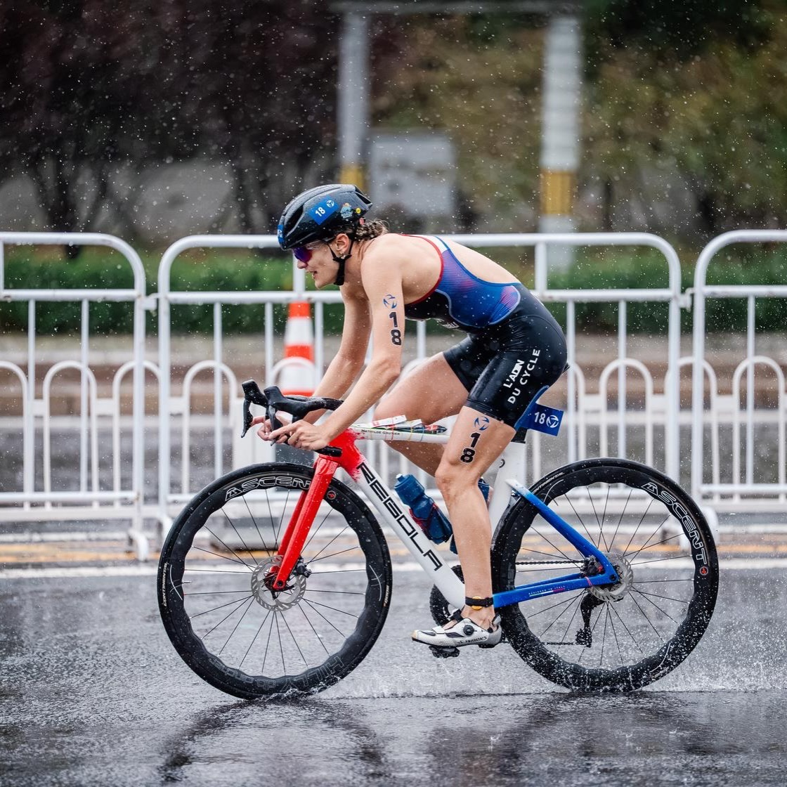
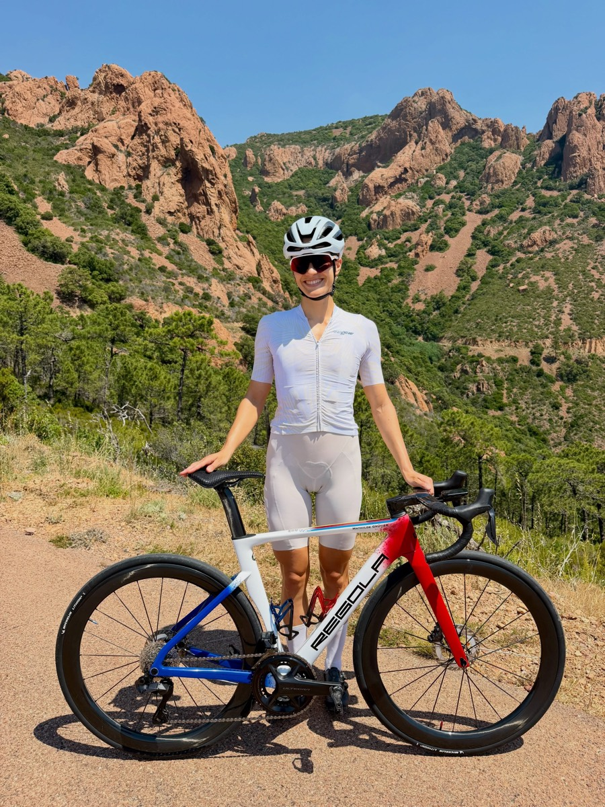
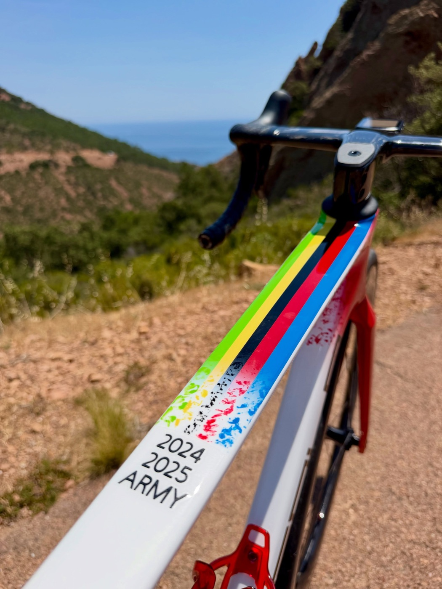

Regola
Piémont · depuis 2021
Une marque italienne intimiste qui bouscule les codes du haut de gamme. Leur règle est simple : il n'y en a pas !
Montage à la carte, peinture 100 % personnalisable et positionnement tarifaire incomparable. Chaque cadre est peint à la main dans la province de Cuneo.
Les modèles au studio
Site de la marque ↗En course
Triathlète élite · Équipe de France · Saint-Raphaël
Triathlète française de haut niveau, installée à Saint-Raphaël, Mathilde Gautier a rejoint l'équipe Regola en juin 2026. Championne d'Europe de triathlon sprint en 2023, elle est montée sur le podium de la Coupe du monde à Tongyeong (Corée) en 2026.
Elle a laissé carte blanche à Regola pour peindre son vélo : un Dardo bleu, blanc et rouge, à ses couleurs, le même que vous pouvez découvrir au studio.


Photos : Mathilde Gautier (Instagram @mathgautier)
Suivre Mathilde sur Instagram ↗